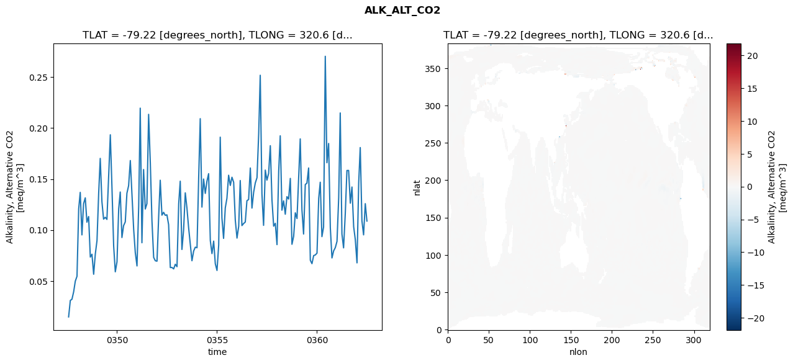
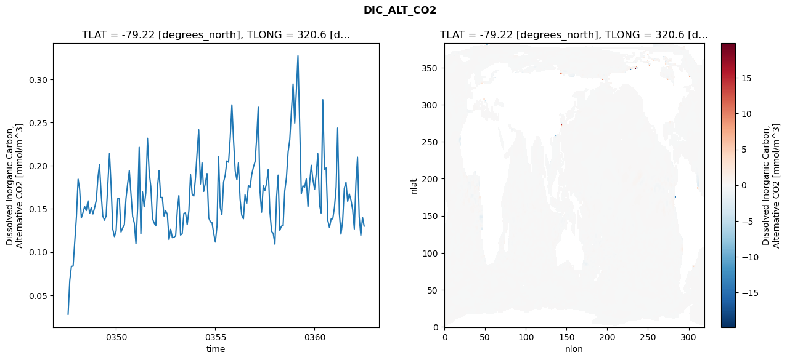
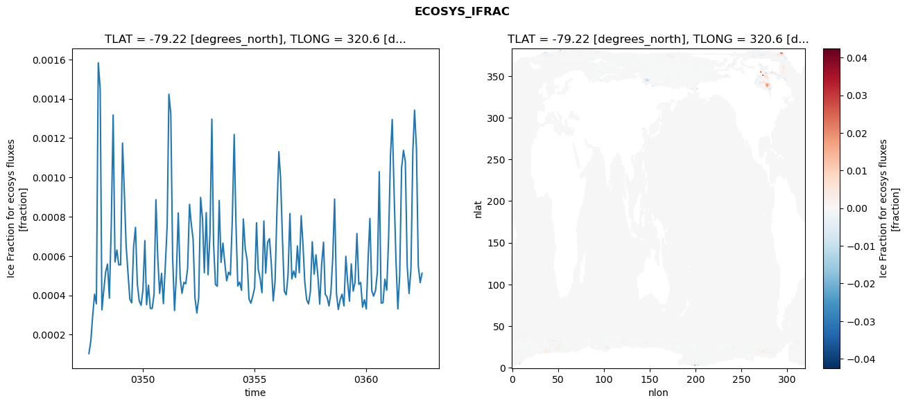
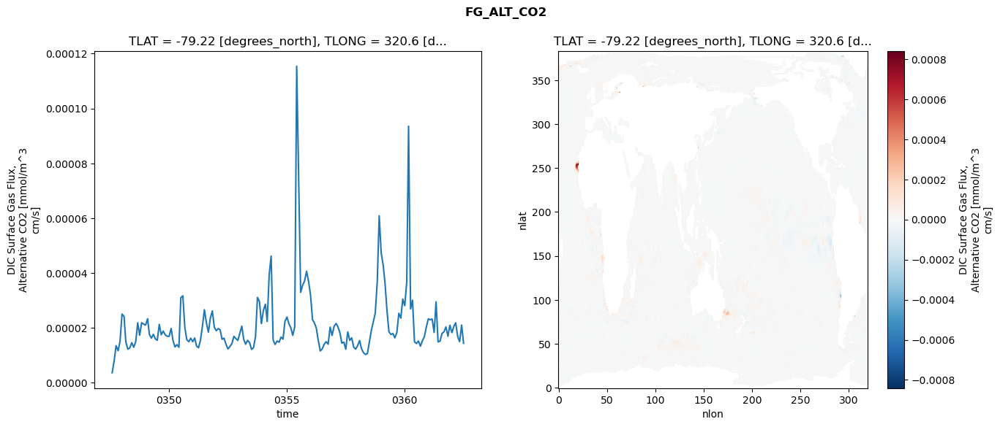

glb-dor_North_Atlantic_basin_036_1999-07-01_00146#
Simulation details#
Case: smyle.cdr-atlas-v0.glb-dor_North_Atlantic_basin_036_1999-07-01_00146.001
Basin: North_Atlantic_basin
Polygon: 36.0
Start date: 1999-07
Show code cell source Hide code cell source
import xarray as xr
import matplotlib.pyplot as plt
Show code cell source Hide code cell source
zarr_store = "/path/to/zarr/store"
# Parameters
zarr_store = "/global/cfs/projectdirs/m4746/Projects/Ocean-CDR-Atlas-v0/data/validation/smyle.cdr-atlas-v0.glb-dor_North_Atlantic_basin_036_1999-07-01_00146.001.validation.zarr"
Show code cell source Hide code cell source
%%time
ds_o = xr.open_zarr(zarr_store).compute()
ds_o
CPU times: user 652 ms, sys: 407 ms, total: 1.06 s
Wall time: 1.26 s
<xarray.Dataset> Size: 2MB
Dimensions: (nlat: 384, nlon: 320, time: 180)
Coordinates:
TLAT float64 8B -79.22
TLONG float64 8B 320.6
ULAT float64 8B -78.95
ULONG float64 8B 321.1
* time (time) object 1kB 0347-08-01 00:00:00 ... 0362-07-01 0...
z_t float32 4B 500.0
Dimensions without coordinates: nlat, nlon
Data variables:
ALK_ALT_CO2_diff (nlat, nlon) float32 492kB nan nan nan ... nan nan nan
ALK_ALT_CO2_rmse (time) float64 1kB 0.01469 0.03087 ... 0.1258 0.1087
DIC_ALT_CO2_diff (nlat, nlon) float32 492kB nan nan nan ... nan nan nan
DIC_ALT_CO2_rmse (time) float64 1kB 0.02795 0.06714 ... 0.1401 0.1299
ECOSYS_IFRAC_diff (nlat, nlon) float32 492kB nan nan nan ... nan nan nan
ECOSYS_IFRAC_rmse (time) float64 1kB 0.0001039 0.0001686 ... 0.0005125
FG_ALT_CO2_diff (nlat, nlon) float32 492kB nan nan nan ... nan nan nan
FG_ALT_CO2_rmse (time) float64 1kB 3.649e-06 8.029e-06 ... 1.44e-05xarray.Dataset
- nlat: 384
- nlon: 320
- time: 180
- TLAT()float64-79.22
- long_name :
- array of t-grid latitudes
- units :
- degrees_north
array(-79.22052261)
- TLONG()float64320.6
- long_name :
- array of t-grid longitudes
- units :
- degrees_east
array(320.56250892)
- ULAT()float64-78.95
- long_name :
- array of u-grid latitudes
- units :
- degrees_north
array(-78.95289509)
- ULONG()float64321.1
- long_name :
- array of u-grid longitudes
- units :
- degrees_east
array(321.12500894)
- time(time)object0347-08-01 00:00:00 ... 0362-07-...
- bounds :
- time_bound
- long_name :
- time
array([cftime.DatetimeNoLeap(347, 8, 1, 0, 0, 0, 0, has_year_zero=True), cftime.DatetimeNoLeap(347, 9, 1, 0, 0, 0, 0, has_year_zero=True), cftime.DatetimeNoLeap(347, 10, 1, 0, 0, 0, 0, has_year_zero=True), cftime.DatetimeNoLeap(347, 11, 1, 0, 0, 0, 0, has_year_zero=True), cftime.DatetimeNoLeap(347, 12, 1, 0, 0, 0, 0, has_year_zero=True), cftime.DatetimeNoLeap(348, 1, 1, 0, 0, 0, 0, has_year_zero=True), cftime.DatetimeNoLeap(348, 2, 1, 0, 0, 0, 0, has_year_zero=True), cftime.DatetimeNoLeap(348, 3, 1, 0, 0, 0, 0, has_year_zero=True), cftime.DatetimeNoLeap(348, 4, 1, 0, 0, 0, 0, has_year_zero=True), cftime.DatetimeNoLeap(348, 5, 1, 0, 0, 0, 0, has_year_zero=True), cftime.DatetimeNoLeap(348, 6, 1, 0, 0, 0, 0, has_year_zero=True), cftime.DatetimeNoLeap(348, 7, 1, 0, 0, 0, 0, has_year_zero=True), cftime.DatetimeNoLeap(348, 8, 1, 0, 0, 0, 0, has_year_zero=True), cftime.DatetimeNoLeap(348, 9, 1, 0, 0, 0, 0, has_year_zero=True), cftime.DatetimeNoLeap(348, 10, 1, 0, 0, 0, 0, has_year_zero=True), cftime.DatetimeNoLeap(348, 11, 1, 0, 0, 0, 0, has_year_zero=True), cftime.DatetimeNoLeap(348, 12, 1, 0, 0, 0, 0, has_year_zero=True), cftime.DatetimeNoLeap(349, 1, 1, 0, 0, 0, 0, has_year_zero=True), cftime.DatetimeNoLeap(349, 2, 1, 0, 0, 0, 0, has_year_zero=True), cftime.DatetimeNoLeap(349, 3, 1, 0, 0, 0, 0, has_year_zero=True), cftime.DatetimeNoLeap(349, 4, 1, 0, 0, 0, 0, has_year_zero=True), cftime.DatetimeNoLeap(349, 5, 1, 0, 0, 0, 0, has_year_zero=True), cftime.DatetimeNoLeap(349, 6, 1, 0, 0, 0, 0, has_year_zero=True), cftime.DatetimeNoLeap(349, 7, 1, 0, 0, 0, 0, has_year_zero=True), cftime.DatetimeNoLeap(349, 8, 1, 0, 0, 0, 0, has_year_zero=True), cftime.DatetimeNoLeap(349, 9, 1, 0, 0, 0, 0, has_year_zero=True), cftime.DatetimeNoLeap(349, 10, 1, 0, 0, 0, 0, has_year_zero=True), cftime.DatetimeNoLeap(349, 11, 1, 0, 0, 0, 0, has_year_zero=True), cftime.DatetimeNoLeap(349, 12, 1, 0, 0, 0, 0, has_year_zero=True), cftime.DatetimeNoLeap(350, 1, 1, 0, 0, 0, 0, has_year_zero=True), cftime.DatetimeNoLeap(350, 2, 1, 0, 0, 0, 0, has_year_zero=True), cftime.DatetimeNoLeap(350, 3, 1, 0, 0, 0, 0, has_year_zero=True), cftime.DatetimeNoLeap(350, 4, 1, 0, 0, 0, 0, has_year_zero=True), cftime.DatetimeNoLeap(350, 5, 1, 0, 0, 0, 0, has_year_zero=True), cftime.DatetimeNoLeap(350, 6, 1, 0, 0, 0, 0, has_year_zero=True), cftime.DatetimeNoLeap(350, 7, 1, 0, 0, 0, 0, has_year_zero=True), cftime.DatetimeNoLeap(350, 8, 1, 0, 0, 0, 0, has_year_zero=True), cftime.DatetimeNoLeap(350, 9, 1, 0, 0, 0, 0, has_year_zero=True), cftime.DatetimeNoLeap(350, 10, 1, 0, 0, 0, 0, has_year_zero=True), cftime.DatetimeNoLeap(350, 11, 1, 0, 0, 0, 0, has_year_zero=True), cftime.DatetimeNoLeap(350, 12, 1, 0, 0, 0, 0, has_year_zero=True), cftime.DatetimeNoLeap(351, 1, 1, 0, 0, 0, 0, has_year_zero=True), cftime.DatetimeNoLeap(351, 2, 1, 0, 0, 0, 0, has_year_zero=True), cftime.DatetimeNoLeap(351, 3, 1, 0, 0, 0, 0, has_year_zero=True), cftime.DatetimeNoLeap(351, 4, 1, 0, 0, 0, 0, has_year_zero=True), cftime.DatetimeNoLeap(351, 5, 1, 0, 0, 0, 0, has_year_zero=True), cftime.DatetimeNoLeap(351, 6, 1, 0, 0, 0, 0, has_year_zero=True), cftime.DatetimeNoLeap(351, 7, 1, 0, 0, 0, 0, has_year_zero=True), cftime.DatetimeNoLeap(351, 8, 1, 0, 0, 0, 0, has_year_zero=True), cftime.DatetimeNoLeap(351, 9, 1, 0, 0, 0, 0, has_year_zero=True), cftime.DatetimeNoLeap(351, 10, 1, 0, 0, 0, 0, has_year_zero=True), cftime.DatetimeNoLeap(351, 11, 1, 0, 0, 0, 0, has_year_zero=True), cftime.DatetimeNoLeap(351, 12, 1, 0, 0, 0, 0, has_year_zero=True), cftime.DatetimeNoLeap(352, 1, 1, 0, 0, 0, 0, has_year_zero=True), cftime.DatetimeNoLeap(352, 2, 1, 0, 0, 0, 0, has_year_zero=True), cftime.DatetimeNoLeap(352, 3, 1, 0, 0, 0, 0, has_year_zero=True), cftime.DatetimeNoLeap(352, 4, 1, 0, 0, 0, 0, has_year_zero=True), cftime.DatetimeNoLeap(352, 5, 1, 0, 0, 0, 0, has_year_zero=True), cftime.DatetimeNoLeap(352, 6, 1, 0, 0, 0, 0, has_year_zero=True), cftime.DatetimeNoLeap(352, 7, 1, 0, 0, 0, 0, has_year_zero=True), cftime.DatetimeNoLeap(352, 8, 1, 0, 0, 0, 0, has_year_zero=True), cftime.DatetimeNoLeap(352, 9, 1, 0, 0, 0, 0, has_year_zero=True), cftime.DatetimeNoLeap(352, 10, 1, 0, 0, 0, 0, has_year_zero=True), cftime.DatetimeNoLeap(352, 11, 1, 0, 0, 0, 0, has_year_zero=True), cftime.DatetimeNoLeap(352, 12, 1, 0, 0, 0, 0, has_year_zero=True), cftime.DatetimeNoLeap(353, 1, 1, 0, 0, 0, 0, has_year_zero=True), cftime.DatetimeNoLeap(353, 2, 1, 0, 0, 0, 0, has_year_zero=True), cftime.DatetimeNoLeap(353, 3, 1, 0, 0, 0, 0, has_year_zero=True), cftime.DatetimeNoLeap(353, 4, 1, 0, 0, 0, 0, has_year_zero=True), cftime.DatetimeNoLeap(353, 5, 1, 0, 0, 0, 0, has_year_zero=True), cftime.DatetimeNoLeap(353, 6, 1, 0, 0, 0, 0, has_year_zero=True), cftime.DatetimeNoLeap(353, 7, 1, 0, 0, 0, 0, has_year_zero=True), cftime.DatetimeNoLeap(353, 8, 1, 0, 0, 0, 0, has_year_zero=True), cftime.DatetimeNoLeap(353, 9, 1, 0, 0, 0, 0, has_year_zero=True), cftime.DatetimeNoLeap(353, 10, 1, 0, 0, 0, 0, has_year_zero=True), cftime.DatetimeNoLeap(353, 11, 1, 0, 0, 0, 0, has_year_zero=True), cftime.DatetimeNoLeap(353, 12, 1, 0, 0, 0, 0, has_year_zero=True), cftime.DatetimeNoLeap(354, 1, 1, 0, 0, 0, 0, has_year_zero=True), cftime.DatetimeNoLeap(354, 2, 1, 0, 0, 0, 0, has_year_zero=True), cftime.DatetimeNoLeap(354, 3, 1, 0, 0, 0, 0, has_year_zero=True), cftime.DatetimeNoLeap(354, 4, 1, 0, 0, 0, 0, has_year_zero=True), cftime.DatetimeNoLeap(354, 5, 1, 0, 0, 0, 0, has_year_zero=True), cftime.DatetimeNoLeap(354, 6, 1, 0, 0, 0, 0, has_year_zero=True), cftime.DatetimeNoLeap(354, 7, 1, 0, 0, 0, 0, has_year_zero=True), cftime.DatetimeNoLeap(354, 8, 1, 0, 0, 0, 0, has_year_zero=True), cftime.DatetimeNoLeap(354, 9, 1, 0, 0, 0, 0, has_year_zero=True), cftime.DatetimeNoLeap(354, 10, 1, 0, 0, 0, 0, has_year_zero=True), cftime.DatetimeNoLeap(354, 11, 1, 0, 0, 0, 0, has_year_zero=True), cftime.DatetimeNoLeap(354, 12, 1, 0, 0, 0, 0, has_year_zero=True), cftime.DatetimeNoLeap(355, 1, 1, 0, 0, 0, 0, has_year_zero=True), cftime.DatetimeNoLeap(355, 2, 1, 0, 0, 0, 0, has_year_zero=True), cftime.DatetimeNoLeap(355, 3, 1, 0, 0, 0, 0, has_year_zero=True), cftime.DatetimeNoLeap(355, 4, 1, 0, 0, 0, 0, has_year_zero=True), cftime.DatetimeNoLeap(355, 5, 1, 0, 0, 0, 0, has_year_zero=True), cftime.DatetimeNoLeap(355, 6, 1, 0, 0, 0, 0, has_year_zero=True), cftime.DatetimeNoLeap(355, 7, 1, 0, 0, 0, 0, has_year_zero=True), cftime.DatetimeNoLeap(355, 8, 1, 0, 0, 0, 0, has_year_zero=True), cftime.DatetimeNoLeap(355, 9, 1, 0, 0, 0, 0, has_year_zero=True), cftime.DatetimeNoLeap(355, 10, 1, 0, 0, 0, 0, has_year_zero=True), cftime.DatetimeNoLeap(355, 11, 1, 0, 0, 0, 0, has_year_zero=True), cftime.DatetimeNoLeap(355, 12, 1, 0, 0, 0, 0, has_year_zero=True), cftime.DatetimeNoLeap(356, 1, 1, 0, 0, 0, 0, has_year_zero=True), cftime.DatetimeNoLeap(356, 2, 1, 0, 0, 0, 0, has_year_zero=True), cftime.DatetimeNoLeap(356, 3, 1, 0, 0, 0, 0, has_year_zero=True), cftime.DatetimeNoLeap(356, 4, 1, 0, 0, 0, 0, has_year_zero=True), cftime.DatetimeNoLeap(356, 5, 1, 0, 0, 0, 0, has_year_zero=True), cftime.DatetimeNoLeap(356, 6, 1, 0, 0, 0, 0, has_year_zero=True), cftime.DatetimeNoLeap(356, 7, 1, 0, 0, 0, 0, has_year_zero=True), cftime.DatetimeNoLeap(356, 8, 1, 0, 0, 0, 0, has_year_zero=True), cftime.DatetimeNoLeap(356, 9, 1, 0, 0, 0, 0, has_year_zero=True), cftime.DatetimeNoLeap(356, 10, 1, 0, 0, 0, 0, has_year_zero=True), cftime.DatetimeNoLeap(356, 11, 1, 0, 0, 0, 0, has_year_zero=True), cftime.DatetimeNoLeap(356, 12, 1, 0, 0, 0, 0, has_year_zero=True), cftime.DatetimeNoLeap(357, 1, 1, 0, 0, 0, 0, has_year_zero=True), cftime.DatetimeNoLeap(357, 2, 1, 0, 0, 0, 0, has_year_zero=True), cftime.DatetimeNoLeap(357, 3, 1, 0, 0, 0, 0, has_year_zero=True), cftime.DatetimeNoLeap(357, 4, 1, 0, 0, 0, 0, has_year_zero=True), cftime.DatetimeNoLeap(357, 5, 1, 0, 0, 0, 0, has_year_zero=True), cftime.DatetimeNoLeap(357, 6, 1, 0, 0, 0, 0, has_year_zero=True), cftime.DatetimeNoLeap(357, 7, 1, 0, 0, 0, 0, has_year_zero=True), cftime.DatetimeNoLeap(357, 8, 1, 0, 0, 0, 0, has_year_zero=True), cftime.DatetimeNoLeap(357, 9, 1, 0, 0, 0, 0, has_year_zero=True), cftime.DatetimeNoLeap(357, 10, 1, 0, 0, 0, 0, has_year_zero=True), cftime.DatetimeNoLeap(357, 11, 1, 0, 0, 0, 0, has_year_zero=True), cftime.DatetimeNoLeap(357, 12, 1, 0, 0, 0, 0, has_year_zero=True), cftime.DatetimeNoLeap(358, 1, 1, 0, 0, 0, 0, has_year_zero=True), cftime.DatetimeNoLeap(358, 2, 1, 0, 0, 0, 0, has_year_zero=True), cftime.DatetimeNoLeap(358, 3, 1, 0, 0, 0, 0, has_year_zero=True), cftime.DatetimeNoLeap(358, 4, 1, 0, 0, 0, 0, has_year_zero=True), cftime.DatetimeNoLeap(358, 5, 1, 0, 0, 0, 0, has_year_zero=True), cftime.DatetimeNoLeap(358, 6, 1, 0, 0, 0, 0, has_year_zero=True), cftime.DatetimeNoLeap(358, 7, 1, 0, 0, 0, 0, has_year_zero=True), cftime.DatetimeNoLeap(358, 8, 1, 0, 0, 0, 0, has_year_zero=True), cftime.DatetimeNoLeap(358, 9, 1, 0, 0, 0, 0, has_year_zero=True), cftime.DatetimeNoLeap(358, 10, 1, 0, 0, 0, 0, has_year_zero=True), cftime.DatetimeNoLeap(358, 11, 1, 0, 0, 0, 0, has_year_zero=True), cftime.DatetimeNoLeap(358, 12, 1, 0, 0, 0, 0, has_year_zero=True), cftime.DatetimeNoLeap(359, 1, 1, 0, 0, 0, 0, has_year_zero=True), cftime.DatetimeNoLeap(359, 2, 1, 0, 0, 0, 0, has_year_zero=True), cftime.DatetimeNoLeap(359, 3, 1, 0, 0, 0, 0, has_year_zero=True), cftime.DatetimeNoLeap(359, 4, 1, 0, 0, 0, 0, has_year_zero=True), cftime.DatetimeNoLeap(359, 5, 1, 0, 0, 0, 0, has_year_zero=True), cftime.DatetimeNoLeap(359, 6, 1, 0, 0, 0, 0, has_year_zero=True), cftime.DatetimeNoLeap(359, 7, 1, 0, 0, 0, 0, has_year_zero=True), cftime.DatetimeNoLeap(359, 8, 1, 0, 0, 0, 0, has_year_zero=True), cftime.DatetimeNoLeap(359, 9, 1, 0, 0, 0, 0, has_year_zero=True), cftime.DatetimeNoLeap(359, 10, 1, 0, 0, 0, 0, has_year_zero=True), cftime.DatetimeNoLeap(359, 11, 1, 0, 0, 0, 0, has_year_zero=True), cftime.DatetimeNoLeap(359, 12, 1, 0, 0, 0, 0, has_year_zero=True), cftime.DatetimeNoLeap(360, 1, 1, 0, 0, 0, 0, has_year_zero=True), cftime.DatetimeNoLeap(360, 2, 1, 0, 0, 0, 0, has_year_zero=True), cftime.DatetimeNoLeap(360, 3, 1, 0, 0, 0, 0, has_year_zero=True), cftime.DatetimeNoLeap(360, 4, 1, 0, 0, 0, 0, has_year_zero=True), cftime.DatetimeNoLeap(360, 5, 1, 0, 0, 0, 0, has_year_zero=True), cftime.DatetimeNoLeap(360, 6, 1, 0, 0, 0, 0, has_year_zero=True), cftime.DatetimeNoLeap(360, 7, 1, 0, 0, 0, 0, has_year_zero=True), cftime.DatetimeNoLeap(360, 8, 1, 0, 0, 0, 0, has_year_zero=True), cftime.DatetimeNoLeap(360, 9, 1, 0, 0, 0, 0, has_year_zero=True), cftime.DatetimeNoLeap(360, 10, 1, 0, 0, 0, 0, has_year_zero=True), cftime.DatetimeNoLeap(360, 11, 1, 0, 0, 0, 0, has_year_zero=True), cftime.DatetimeNoLeap(360, 12, 1, 0, 0, 0, 0, has_year_zero=True), cftime.DatetimeNoLeap(361, 1, 1, 0, 0, 0, 0, has_year_zero=True), cftime.DatetimeNoLeap(361, 2, 1, 0, 0, 0, 0, has_year_zero=True), cftime.DatetimeNoLeap(361, 3, 1, 0, 0, 0, 0, has_year_zero=True), cftime.DatetimeNoLeap(361, 4, 1, 0, 0, 0, 0, has_year_zero=True), cftime.DatetimeNoLeap(361, 5, 1, 0, 0, 0, 0, has_year_zero=True), cftime.DatetimeNoLeap(361, 6, 1, 0, 0, 0, 0, has_year_zero=True), cftime.DatetimeNoLeap(361, 7, 1, 0, 0, 0, 0, has_year_zero=True), cftime.DatetimeNoLeap(361, 8, 1, 0, 0, 0, 0, has_year_zero=True), cftime.DatetimeNoLeap(361, 9, 1, 0, 0, 0, 0, has_year_zero=True), cftime.DatetimeNoLeap(361, 10, 1, 0, 0, 0, 0, has_year_zero=True), cftime.DatetimeNoLeap(361, 11, 1, 0, 0, 0, 0, has_year_zero=True), cftime.DatetimeNoLeap(361, 12, 1, 0, 0, 0, 0, has_year_zero=True), cftime.DatetimeNoLeap(362, 1, 1, 0, 0, 0, 0, has_year_zero=True), cftime.DatetimeNoLeap(362, 2, 1, 0, 0, 0, 0, has_year_zero=True), cftime.DatetimeNoLeap(362, 3, 1, 0, 0, 0, 0, has_year_zero=True), cftime.DatetimeNoLeap(362, 4, 1, 0, 0, 0, 0, has_year_zero=True), cftime.DatetimeNoLeap(362, 5, 1, 0, 0, 0, 0, has_year_zero=True), cftime.DatetimeNoLeap(362, 6, 1, 0, 0, 0, 0, has_year_zero=True), cftime.DatetimeNoLeap(362, 7, 1, 0, 0, 0, 0, has_year_zero=True)], dtype=object) - z_t()float32500.0
- long_name :
- depth from surface to midpoint of layer
- positive :
- down
- units :
- centimeters
- valid_max :
- 537500.0
- valid_min :
- 500.0
array(500., dtype=float32)
- ALK_ALT_CO2_diff(nlat, nlon)float32nan nan nan nan ... nan nan nan nan
- cell_methods :
- time: mean
- grid_loc :
- 3111
- long_name :
- Alkalinity, Alternative CO2
- units :
- meq/m^3
array([[ nan, nan, nan, ..., nan, nan, nan], [ nan, nan, nan, ..., nan, nan, nan], [0.02392578, 0.01416016, 0.0222168 , ..., nan, nan, nan], ..., [ nan, nan, nan, ..., nan, nan, nan], [ nan, nan, nan, ..., nan, nan, nan], [ nan, nan, nan, ..., nan, nan, nan]], dtype=float32) - ALK_ALT_CO2_rmse(time)float640.01469 0.03087 ... 0.1258 0.1087
- cell_methods :
- time: mean
- grid_loc :
- 3111
- long_name :
- Alkalinity, Alternative CO2
- units :
- meq/m^3
array([0.01469081, 0.0308688 , 0.0320232 , 0.03933936, 0.04976485, 0.05454907, 0.12077589, 0.1368978 , 0.09518708, 0.12573174, 0.13153301, 0.10760564, 0.11315923, 0.07339219, 0.07619809, 0.05656408, 0.07627921, 0.08961489, 0.13646267, 0.17022524, 0.12767078, 0.11065762, 0.11245243, 0.11035011, 0.15251259, 0.19340381, 0.1417447 , 0.08429522, 0.05895616, 0.06875197, 0.12077353, 0.13723891, 0.09259286, 0.10422113, 0.10791788, 0.13606905, 0.14347423, 0.16812257, 0.13558801, 0.10080384, 0.0776498 , 0.06470655, 0.12322117, 0.2195351 , 0.08747095, 0.1593037 , 0.12054632, 0.12579318, 0.21346077, 0.16575059, 0.10895072, 0.07310827, 0.06980235, 0.06936374, 0.11381605, 0.14880694, 0.11453443, 0.11733016, 0.11436242, 0.11487446, 0.10523838, 0.06313499, 0.06319876, 0.06182155, 0.06635181, 0.06396197, 0.12559917, 0.14786545, 0.08089295, 0.0997752 , 0.13642333, 0.12170107, 0.10225681, 0.08557465, 0.0698211 , 0.07937578, 0.08312077, 0.08256152, 0.15193 , 0.20922325, 0.12245371, 0.14999286, 0.13588886, 0.14776898, 0.15523727, 0.08955001, 0.0768279 , 0.08905948, 0.06682932, 0.06028988, 0.08529068, 0.1910636 , 0.11169978, 0.09173669, 0.12163909, 0.1310788 , 0.15370964, 0.14370381, 0.15175634, 0.14681365, 0.10947672, 0.09204536, 0.10365877, 0.14851541, 0.10429636, 0.10629542, 0.10778218, 0.12870744, 0.12989222, 0.16081317, 0.12148981, 0.13712534, 0.14615774, 0.15132736, 0.19450493, 0.25181209, 0.13539791, 0.10453845, 0.15874973, 0.14890263, 0.15543144, 0.18270643, 0.12960748, 0.10374062, 0.10652373, 0.08562075, 0.15764119, 0.19241163, 0.11943235, 0.12855653, 0.11546269, 0.13270876, 0.13034813, 0.15060789, 0.08596696, 0.09380245, 0.11685108, 0.11123078, 0.15192344, 0.18936869, 0.11988131, 0.09601932, 0.14457857, 0.1459837 , 0.16081354, 0.07028254, 0.06694786, 0.07486506, 0.07547948, 0.07726757, 0.13099871, 0.14685416, 0.09347735, 0.10283755, 0.27042744, 0.16599725, 0.18488716, 0.10226126, 0.07257005, 0.07955716, 0.08266392, 0.08882444, 0.13181631, 0.21482805, 0.09603487, 0.08245333, 0.11598712, 0.15836767, 0.15841245, 0.12630531, 0.14217064, 0.10324057, 0.09051908, 0.06771444, 0.1463231 , 0.18087496, 0.10891509, 0.09521779, 0.12582397, 0.10872477]) - DIC_ALT_CO2_diff(nlat, nlon)float32nan nan nan nan ... nan nan nan nan
- cell_methods :
- time: mean
- grid_loc :
- 3111
- long_name :
- Dissolved Inorganic Carbon, Alternative CO2
- units :
- mmol/m^3
array([[ nan, nan, nan, ..., nan, nan, nan], [ nan, nan, nan, ..., nan, nan, nan], [0.02905273, 0.02099609, 0.02001953, ..., nan, nan, nan], ..., [ nan, nan, nan, ..., nan, nan, nan], [ nan, nan, nan, ..., nan, nan, nan], [ nan, nan, nan, ..., nan, nan, nan]], dtype=float32) - DIC_ALT_CO2_rmse(time)float640.02795 0.06714 ... 0.1401 0.1299
- cell_methods :
- time: mean
- grid_loc :
- 3111
- long_name :
- Dissolved Inorganic Carbon, Alternative CO2
- units :
- mmol/m^3
array([0.02795418, 0.06714289, 0.08342329, 0.08370794, 0.11139806, 0.1407295 , 0.18436839, 0.17282022, 0.13950615, 0.14558947, 0.15274739, 0.14796851, 0.15935306, 0.14459912, 0.15136558, 0.14410252, 0.15130369, 0.15985817, 0.18652992, 0.20111739, 0.16752747, 0.14155945, 0.1368294 , 0.14175307, 0.17785378, 0.21405612, 0.1765946 , 0.12633621, 0.11784894, 0.12431843, 0.16216315, 0.16202212, 0.12315236, 0.12791567, 0.1312997 , 0.16168226, 0.17922568, 0.19438318, 0.16739147, 0.14113351, 0.13363783, 0.10961977, 0.15189295, 0.22125348, 0.12112931, 0.16962589, 0.15235524, 0.16844121, 0.23171622, 0.1919631 , 0.1760006 , 0.13879733, 0.13361604, 0.13025697, 0.17546923, 0.19416761, 0.16326403, 0.16322128, 0.14164828, 0.14782394, 0.14371785, 0.1144941 , 0.12639336, 0.11662056, 0.11700409, 0.11895486, 0.14850966, 0.16532319, 0.11963165, 0.12121921, 0.14469436, 0.14532055, 0.13162186, 0.14782562, 0.18972659, 0.16680362, 0.16479017, 0.18618898, 0.21690922, 0.24150846, 0.17878526, 0.20331887, 0.17022398, 0.17974924, 0.19086745, 0.13961603, 0.13505815, 0.13392161, 0.12178425, 0.11156325, 0.13056963, 0.21070675, 0.15163572, 0.14346216, 0.18107538, 0.18880037, 0.20552842, 0.203927 , 0.23181018, 0.27035756, 0.23040303, 0.19397347, 0.18363655, 0.20311825, 0.16112338, 0.14263207, 0.13850498, 0.16633129, 0.15607261, 0.17727094, 0.17468509, 0.18970964, 0.19813296, 0.20456729, 0.23328076, 0.2676572 , 0.17148954, 0.14611907, 0.17673678, 0.17126841, 0.17970687, 0.19583492, 0.14652949, 0.12379092, 0.12165464, 0.10912246, 0.16363628, 0.18899587, 0.12517094, 0.12997515, 0.13052759, 0.17076593, 0.18608112, 0.21597615, 0.22995334, 0.26399437, 0.29452165, 0.24915139, 0.28851807, 0.32712597, 0.24847661, 0.16755068, 0.17666863, 0.1749388 , 0.18462682, 0.15279479, 0.17974235, 0.20048024, 0.18391542, 0.17260938, 0.19146223, 0.21377422, 0.15493846, 0.14521155, 0.27629416, 0.19538668, 0.19735225, 0.13655511, 0.12842948, 0.13833292, 0.13841823, 0.15161792, 0.17523914, 0.24356346, 0.1447292 , 0.12065535, 0.13588444, 0.17349347, 0.18073631, 0.15867303, 0.16718274, 0.15986846, 0.14922113, 0.12662767, 0.18219388, 0.20983689, 0.14073838, 0.11935207, 0.14012147, 0.12994235]) - ECOSYS_IFRAC_diff(nlat, nlon)float32nan nan nan nan ... nan nan nan nan
- cell_methods :
- time: mean
- grid_loc :
- 2110
- long_name :
- Ice Fraction for ecosys fluxes
- units :
- fraction
array([[ nan, nan, nan, ..., nan, nan, nan], [ nan, nan, nan, ..., nan, nan, nan], [-3.2782555e-06, 4.5299530e-05, 1.8239021e-05, ..., nan, nan, nan], ..., [ nan, nan, nan, ..., nan, nan, nan], [ nan, nan, nan, ..., nan, nan, nan], [ nan, nan, nan, ..., nan, nan, nan]], dtype=float32) - ECOSYS_IFRAC_rmse(time)float640.0001039 0.0001686 ... 0.0005125
- cell_methods :
- time: mean
- grid_loc :
- 2110
- long_name :
- Ice Fraction for ecosys fluxes
- units :
- fraction
array([0.00010387, 0.00016856, 0.00029436, 0.00040578, 0.00035696, 0.00158273, 0.00144983, 0.00032572, 0.00042783, 0.00051832, 0.0005591 , 0.00038553, 0.0007554 , 0.00131738, 0.00056979, 0.0006304 , 0.00055544, 0.00055517, 0.00117455, 0.00094025, 0.00065285, 0.00051614, 0.00038082, 0.00036182, 0.00064665, 0.00074582, 0.00045776, 0.00037211, 0.00034966, 0.00042842, 0.00067808, 0.00035271, 0.00045152, 0.00033364, 0.00033328, 0.00040478, 0.00088648, 0.00058477, 0.00040991, 0.00051209, 0.00035788, 0.00054767, 0.00075898, 0.00142276, 0.00132384, 0.00059287, 0.00032282, 0.00050248, 0.00081915, 0.00049073, 0.00041028, 0.00046618, 0.00045875, 0.00053798, 0.00086299, 0.00076547, 0.00068363, 0.00038653, 0.00031063, 0.00038614, 0.0008981 , 0.00079011, 0.00051504, 0.00082052, 0.00050474, 0.00070878, 0.00129653, 0.0006633 , 0.00045475, 0.00044669, 0.00088226, 0.00056751, 0.00066561, 0.00056354, 0.00047415, 0.00051771, 0.00050356, 0.00078198, 0.00121802, 0.00077494, 0.00044729, 0.00046731, 0.00042558, 0.00078811, 0.00063614, 0.00057906, 0.00038156, 0.0003601 , 0.00039558, 0.00043739, 0.00076914, 0.00053329, 0.00048532, 0.00041359, 0.00077809, 0.00051244, 0.00066969, 0.00068836, 0.00055979, 0.00037212, 0.00047138, 0.00083069, 0.00113075, 0.00099806, 0.00068629, 0.00042111, 0.000403 , 0.00050325, 0.0008161 , 0.00048382, 0.00052388, 0.00049121, 0.00065109, 0.00051504, 0.00080493, 0.0006651 , 0.0004674 , 0.00037866, 0.00035642, 0.00041869, 0.0006723 , 0.00050806, 0.00060611, 0.00049666, 0.00035529, 0.00055622, 0.00067043, 0.00040614, 0.00039039, 0.00034616, 0.00041209, 0.00058605, 0.00088934, 0.00040722, 0.00032835, 0.00037906, 0.00040583, 0.0003463 , 0.00059801, 0.00047174, 0.00037064, 0.00056 , 0.00042162, 0.00046551, 0.00071451, 0.00045605, 0.00046551, 0.00034029, 0.00037765, 0.00033122, 0.00059536, 0.00079099, 0.00042285, 0.00039609, 0.00042511, 0.00051699, 0.00102882, 0.00036036, 0.00036234, 0.00048207, 0.00042607, 0.00069758, 0.00111562, 0.00129451, 0.00091743, 0.00057895, 0.00033073, 0.00050351, 0.00104727, 0.00113763, 0.00108054, 0.00054654, 0.00040955, 0.00053326, 0.00113311, 0.00134192, 0.0011445 , 0.00054897, 0.00046462, 0.00051248]) - FG_ALT_CO2_diff(nlat, nlon)float32nan nan nan nan ... nan nan nan nan
- cell_methods :
- time: mean
- grid_loc :
- 2110
- long_name :
- DIC Surface Gas Flux, Alternative CO2
- units :
- mmol/m^3 cm/s
array([[ nan, nan, nan, ..., nan, nan, nan], [ nan, nan, nan, ..., nan, nan, nan], [-4.6387640e-09, -3.5453013e-08, -1.8155966e-09, ..., nan, nan, nan], ..., [ nan, nan, nan, ..., nan, nan, nan], [ nan, nan, nan, ..., nan, nan, nan], [ nan, nan, nan, ..., nan, nan, nan]], dtype=float32) - FG_ALT_CO2_rmse(time)float643.649e-06 8.029e-06 ... 1.44e-05
- cell_methods :
- time: mean
- grid_loc :
- 2110
- long_name :
- DIC Surface Gas Flux, Alternative CO2
- units :
- mmol/m^3 cm/s
array([3.64934183e-06, 8.02940627e-06, 1.35296666e-05, 1.16948901e-05, 1.51052545e-05, 2.50613564e-05, 2.42010981e-05, 1.48573200e-05, 1.22536466e-05, 1.27325027e-05, 1.46465863e-05, 1.29394792e-05, 1.50002137e-05, 2.18559252e-05, 1.73313083e-05, 2.18900506e-05, 2.14156714e-05, 2.10138862e-05, 2.33291533e-05, 1.76005621e-05, 1.62770057e-05, 1.76584751e-05, 1.60086816e-05, 1.55023540e-05, 2.12768243e-05, 1.74991593e-05, 1.88404025e-05, 1.74878444e-05, 1.69547882e-05, 1.69365157e-05, 1.98258411e-05, 1.54346369e-05, 1.31044792e-05, 1.38957557e-05, 1.29592398e-05, 3.10084520e-05, 3.17060572e-05, 2.00718568e-05, 1.57460270e-05, 1.49525481e-05, 1.62424737e-05, 1.49807045e-05, 1.63316318e-05, 1.34216605e-05, 1.27731066e-05, 1.55194954e-05, 2.06972966e-05, 2.66304492e-05, 2.18671123e-05, 1.84610089e-05, 2.35691597e-05, 2.61960659e-05, 2.03054959e-05, 1.89987942e-05, 1.97577829e-05, 1.93648994e-05, 1.58581862e-05, 1.62828352e-05, 1.40354771e-05, 1.23273652e-05, 1.32429511e-05, 1.43616003e-05, 1.69381539e-05, 1.60886376e-05, 1.54699250e-05, 1.80580243e-05, 2.06602975e-05, 1.59093102e-05, 1.40626485e-05, 1.54760398e-05, 1.46514882e-05, 1.21724147e-05, 1.27903606e-05, 1.68243100e-05, 3.11097874e-05, 2.96080400e-05, 2.15815078e-05, 2.63843313e-05, 2.86706688e-05, 2.23579039e-05, ... 3.70490133e-05, 3.20492434e-05, 2.29899016e-05, 2.18811893e-05, 1.99532618e-05, 1.54443642e-05, 1.16047579e-05, 1.23547516e-05, 1.40736656e-05, 1.49845712e-05, 1.40612065e-05, 2.02916338e-05, 1.72452210e-05, 2.05876304e-05, 2.16287424e-05, 2.04546025e-05, 1.82683783e-05, 1.44850994e-05, 1.48436965e-05, 1.22241151e-05, 1.85694553e-05, 1.54633152e-05, 1.63634230e-05, 1.30037705e-05, 1.22706544e-05, 1.35547042e-05, 1.54024683e-05, 1.24881064e-05, 1.09910938e-05, 1.03397839e-05, 1.06134483e-05, 1.47186363e-05, 1.90843887e-05, 2.22179146e-05, 2.53990633e-05, 3.68445992e-05, 6.08774303e-05, 4.73037912e-05, 4.28348459e-05, 3.63732063e-05, 2.61868319e-05, 1.86010917e-05, 1.75911572e-05, 1.79605794e-05, 1.63930679e-05, 1.84129793e-05, 2.53481898e-05, 2.35818870e-05, 3.05244472e-05, 2.81099726e-05, 3.68405801e-05, 9.35181692e-05, 2.69493429e-05, 3.01051063e-05, 1.49233460e-05, 1.43121788e-05, 1.52442163e-05, 1.33476437e-05, 1.53150064e-05, 1.68371691e-05, 2.03317076e-05, 2.33109993e-05, 2.29777387e-05, 2.32573750e-05, 1.83467226e-05, 2.94990894e-05, 1.49260610e-05, 1.51859261e-05, 1.79934189e-05, 1.86076114e-05, 2.03592660e-05, 1.69670808e-05, 2.09921924e-05, 1.82928401e-05, 2.05908618e-05, 2.18836760e-05, 1.68673820e-05, 1.49850869e-05, 2.10496933e-05, 1.44027116e-05])
- timePandasIndex
PandasIndex(CFTimeIndex([0347-08-01 00:00:00, 0347-09-01 00:00:00, 0347-10-01 00:00:00, 0347-11-01 00:00:00, 0347-12-01 00:00:00, 0348-01-01 00:00:00, 0348-02-01 00:00:00, 0348-03-01 00:00:00, 0348-04-01 00:00:00, 0348-05-01 00:00:00, ... 0361-10-01 00:00:00, 0361-11-01 00:00:00, 0361-12-01 00:00:00, 0362-01-01 00:00:00, 0362-02-01 00:00:00, 0362-03-01 00:00:00, 0362-04-01 00:00:00, 0362-05-01 00:00:00, 0362-06-01 00:00:00, 0362-07-01 00:00:00], dtype='object', length=180, calendar='noleap', freq='MS'))
Show code cell source Hide code cell source
variables = [v[:-5] for v in ds_o.variables if "_rmse" in v]
Show code cell source Hide code cell source
plt.rcParams.update({'figure.max_open_warning': 0})
for v in variables:
fig, axs = plt.subplots(1, 2, figsize=(15, 6))
ds_o[f"{v}_rmse"].plot(ax=axs[0])
ds_o[f"{v}_diff"].plot(ax=axs[1])
plt.suptitle(v, fontweight="bold")



